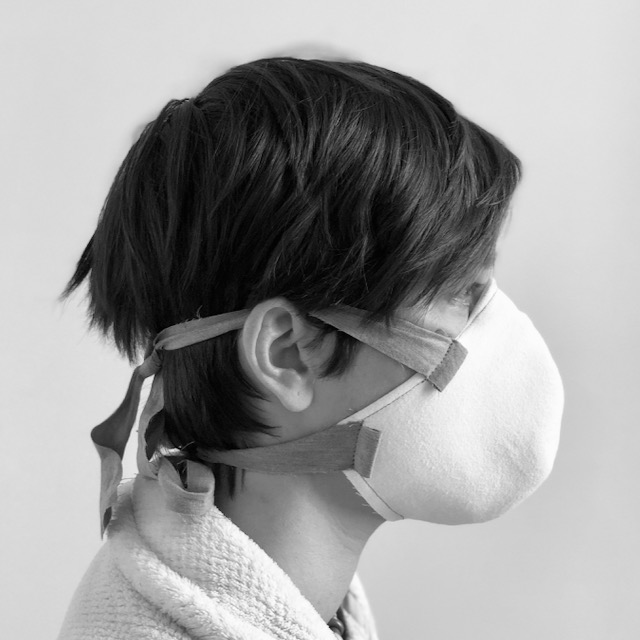

ragmask
Ultra-simple, fast-to-make, great-fitting mask.

Download instructions to build
ragmask v2.1 (PDF)
.
Twitter:
@ragmaskedbandit
← design improvements welcome. optimizing for speed of construction / low skill necessary / material availability / "good enough" efficacy.